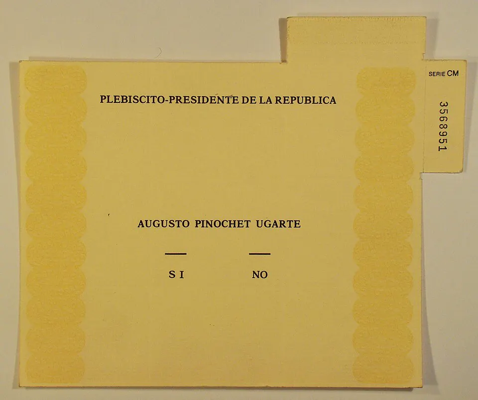

Plebiscito de 1988

La Constitución de 1980 establecía que en 1988 la Junta propondría un candidato para un nuevo periodo de ocho años, que debía ser ratificado en plebiscito. La Junta designó a Augusto Pinochet. La oposición, tras años de protestas y debates sobre cómo enfrentar al régimen, decidió participar: llamó a inscribirse masivamente en los nuevos registros electorales y formó la Concertación de Partidos por el No, cuyo vocero fue Patricio Aylwin. Durante casi un mes, ambas opciones tuvieron acceso a una franja televisiva, algo inédito en dictadura. El 5 de octubre de 1988, con una participación muy alta, el No obtuvo cerca del 56% de los votos y el Sí cerca del 44%. Esa noche hubo incertidumbre por la demora de los resultados oficiales, hasta que el comandante en jefe de la Fuerza Aérea, Fernando Matthei, reconoció públicamente el triunfo del No. Según las normas constitucionales, Pinochet siguió en el poder hasta marzo de 1990; en 1989 se aprobaron reformas constitucionales en otro plebiscito y en diciembre de ese año Aylwin fue elegido presidente. El plebiscito suele considerarse un ejemplo de transición por vía institucional; también se discute cuánto limitó el marco heredado a la nueva democracia.
Versión para niños
El 5 de octubre de 1988, los chilenos votaron en un plebiscito. Tenían que elegir entre dos opciones: "Sí", para que Augusto Pinochet siguiera gobernando ocho años más, o "No", para que hubiera elecciones libres de presidente y parlamentarios. Millones de personas se inscribieron para votar. Ganó el "No" y así comenzó el camino de regreso a la democracia. Fue un cambio logrado de forma pacífica, con votos.
Para maestros
Nivel sugerido: 2° medio
Objetivo: Explicar cómo el plebiscito de 1988 abrió el camino a la transición democrática y valorar la participación ciudadana.
Preguntas para la clase:
- ¿Por qué la oposición decidió participar en un plebiscito convocado por la dictadura?
- ¿Qué papel tuvo la franja televisiva en la campaña?
- ¿Qué condiciones hicieron posible que se respetara el resultado?
Actividad (20–30 min): En grupos, los estudiantes analizan fragmentos de la franja del Sí y de la franja del No e identifican sus mensajes, símbolos y emociones. Cierran comparando ambas estrategias de comunicación, con respeto por las distintas posiciones que puedan existir en las familias.
Fuentes sugeridas: Museo de la Memoria y los Derechos Humanos; Biblioteca del Congreso Nacional (BCN); Memoria Chilena.
Objetivos de Aprendizaje (Currículum Nacional)
- 6° básico · HI06 OA 08 Comparar diferentes visiones sobre el quiebre de la democracia en Chile, el régimen o dictadura militar y el proceso de recuperación de la democracia
- 2° medio · HI2M OA 19 Explicar los factores que incidieron en el proceso de recuperación de la democracia durante la década de 1980 … el surgimiento de protestas
- 2° medio · HI2M OA 20 Analizar la transición a la democracia como un proceso marcado por el plebiscito de 1988, la búsqueda de acuerdos entre el gobierno y la oposición
Personajes
Revisión humana pendiente. Cómo se revisa · Reportar un error
Cómo citar: Historia de Chile. (2026). Plebiscito de 1988. En Historia de Chile: atlas y línea de tiempo. https://moises-salgado.github.io/historia-de-chile/momento/plebiscito-de-1988.html